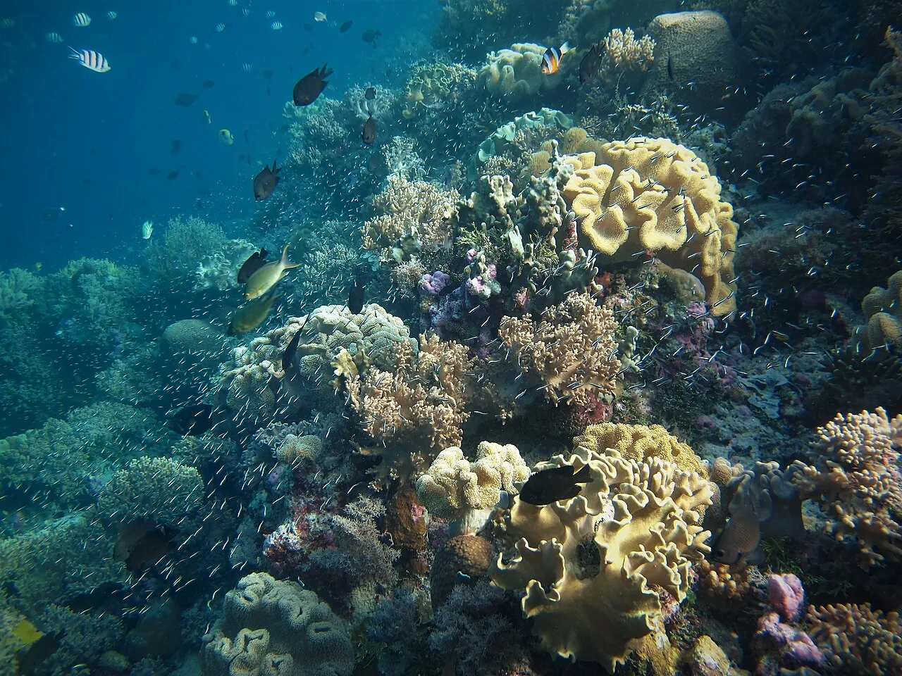

Wakatobi
Sulawesi, Indonésie · plongée, snorkeling

Parc national marin au cœur du Triangle de corail, avec des récifs parmi les plus sains de la planète.
- Lieu
- Sulawesi, Indonésie
- Niveau
- Débutant
- Activités
- plongée, snorkeling
- Type d'eau
- Mer / océan
- Coordonnées
- -5.30, 123.60 (position approximative du secteur)
Dangers à connaître
- Récif protégé.
- Courants sur certains sites.
Le conseil d'Ocean Buddy
Snorkeling spectaculaire dès le bord : le tombant commence à quelques mètres.
Ouvrir dans Ocean Buddy Télécharger sur l'App Store
Source : Fiche Ocean Buddy · septembre 2026 · à vérifier localement.